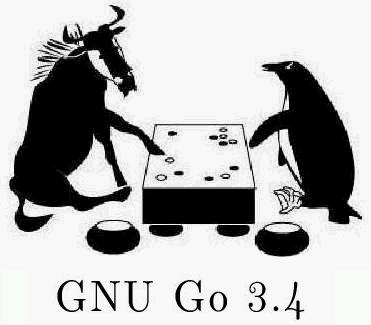

GNU Go Development Versions
This page concerns the ongoing development of GNU Go. If you are
looking for the latest stable release you should go to the GNU Go main page.
History of stable releases
- GNU Go 1.1 was posted to comp.sources.games March 13 1989. (Part
1, Part
2, Part 3)
- GNU Go 1.2 was released sometime in 1995.
- Work resumed on GNU Go in October 1998.
- GNU Go 2.0 was released April 20, 1999.
- GNU Go 2.4 was released September 12, 1999.
- GNU Go 2.6 was released February 13, 2000.
- GNU Go 3.0 was released August 24, 2001.
- GNU Go 3.2 was released April 25, 2002.
- GNU Go 3.4 was released July 31, 2003.
GNU Go 3.0 is about four stones stronger than GNU Go 2.6.
GNU Go 3.2 is about as fast as GNU Go 3.0 but stronger.
GNU Go 3.4 is slightly slower than GNU Go 3.2 but stronger.
Authors
GNU Go authors (in chronological order of contribution) are
Man Lung Li, Wayne Iba,
Daniel Bump,
David Denholm,
Gunnar Farnebäck,
Nils Lohner,
Jerome Dumonteil,
Tommy Thorn,
Nicklas Ekstrand,
Inge Wallin,
Thomas Traber, Douglas Ridgway, Teun Burgers,
Tanguy Urvoy,
Thien-Thi Nguyen,
Heikki Levanto, Mark Vytlacil, Adriaan van Kessel, Wolfgang
Manner, Jens Yllman, Don Dailey, Mans Ullerstam, Arend Bayer,
Trevor Morris, Evan Berggren Daniel, Fernando Portela, Paul
Pogonyshev, S.P. Lee and Stephane Nicolet.
You Can Help!
- Here is a GNU Go task
list.
Contact us if
you are interested in helping the development of GNU Go.
Download
You can download GNU Go development versions here. Versions with
an even revision number (2.0, 2.4, 3.0.x, ...) are considered stable.
The latest stable version is GNU Go 3.4, which can be found at
ftp.gnu.org and its
mirrors. (Mirroring may take a day
or two to propogate. Another copy is at this site.)
Versions with an odd revision number (2.3.63, 2.5.4, 3.1.x, ...) are
development versions. They are not mirrored at ftp.gnu.org.
Untar the sources and consult the file README. Details of the
changes is contained in ChangeLog (updated with each release).
Older versions
-
GNU Go archive. Stable versions 2.0, 2.4, 3.0.0
(no longer at ftp.gnu.org) and development versions
since 3.0.0 are archived here.
-
Interrim development page. This is an archive of the
Lysator versions of GNU Go, through 2.7.161.
Development versions (3.5.xx)
Pending patches for 3.5.3
Patches in CVS for 3.5.3
Patches that may not be used
- gunnar_5_3.5. Workaround to avoid a crash.
Replaced with paul_5_3.5.
- stephane_5_1.1. URLs to regression views. Needs revision.
- splee_5_1.8. Test case.
- arend_3_20.5b (Update July 7th).
Big experimental patch rewriting owl escaping. Will be revised further.
- splee_5_1.2. CC509.
- splee_5_1.3. Omit CC31. (This patch has no effect. While CC31 may be redundant it is better to leave it for an organized cleaning of connection patterns.)
- evan_5_1.1. Hoshi tuning. (This was agreed to be a little too dangerous for gnugo.)
- splee_5_1.4. Test revision.
- inge_5_1.1.
First go at new caching. This patch will be extended.
- paul_3_18.7. Eye
margins. A portion of this is in the cvs as paul_3_19.3.
- evan_3_18.13. Intermediate
atari_atari moves. Evan intends to revise this patch.
Other patches
Bug reports
The Go Text Protocol
Current versions of GNU Go implement a text based protocol which could
potentially replace the GMP. Here is a brief
description. More can be found in the GNU Go Texinfo documentation.
Links
Send inquiries and bug reports to
gnugo@gnu.org.
Return to GNU's home page.
Please send FSF & GNU inquiries & questions to
gnu@gnu.org.
There are also other ways to
contact the FSF.
Please send comments on these web pages to
webmasters@www.gnu.org,
send other questions to
gnu@gnu.org.
Copyright (C) 1999 Free Software Foundation, Inc.,
59 Temple Place - Suite 330, Boston, MA 02111, USA
Verbatim copying and distribution of this entire article is
permitted in any medium, provided this notice is preserved.
Updated:
Last modified: Sat Nov 29 11:37:37 2003
{kind=link}